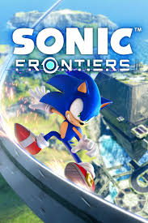

Sonic Frontiers
O mais recente jogo de mundo aberto do Sonic, onde o ouriço azul explora ilhas misteriosas e enfrenta novos desafios.
O mais recente jogo de mundo aberto do Sonic, onde o ouriço azul explora ilhas misteriosas e enfrenta novos desafios.
Uma coletânea dos clássicos jogos do Sonic, incluindo Sonic 1, 2, 3, Sonic & Knuckles e Sonic CD, em versões remasterizadas.
Uma aventura épica focada em Shadow, o misterioso rival de Sonic, explorando seu passado e sua luta por redenção.
O icônico ouriço azul, conhecido por sua velocidade supersônica e espírito aventureiro. Ele é estiloso e descolado e isso ninguém pode tirar dele.
O melhor amigo de Sonic, uma jovem raposa com duas caudas que lhe permitem voar e provavelmente você já o deixou em muitas fases do Sonic, não faça mais isso
Guardião da Master Emerald, Knuckles é um equidna forte, corajoso e não pula treino de perna na academia.
Amy é uma ouriça determinada e otimista, com uma paixão por Sonic e um martelo poderoso. Ela tem bom gosto, o Sonic é bonito, mais do que italianos com bigodes.
O "rival" de Sonic, Shadow é misterioso e possui habilidades de combate extraordinárias, um pouco emo/gótico/rockeiro e é por isso que todos amam, impossível não gostar de personagens badboys
O primeiro filme live-action do Sonic, lançado em 2020, mostrando sua aventura na Terra, se consagrou como uma das melhores ou talvez a melhor adaptação de jogos para as telonas, até porque foi uma das únicas adaptações boas, apesar do primeiro do visual do Sonic ter sido tão feio (era um humano fantasiado), graças aos fãs isso foi mudado.
A sequência, onde Sonic une forças com Tails para enfrentar o Dr. Eggman e Knuckles. Sonic 2 veio pra mostrar que fazer sequência nem sempre da errado, e gerou grande sucesso com público adulto, jovem e principalmente nas crianças, todos amam o Tails (ele é fofo).
O próximo filme da franquia Sonic, com previsão de lançamento para 25 de dezembro de 2024, promete trazer Shadow como um personagem central, podem esperar pessoas fantasiadas de Shadow nos cinemas.